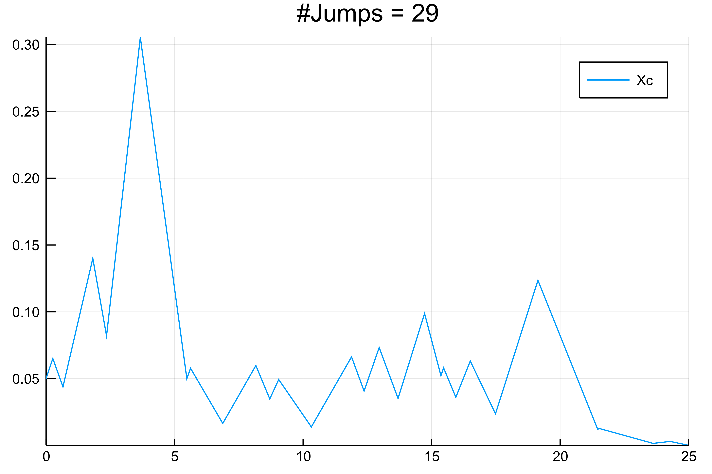
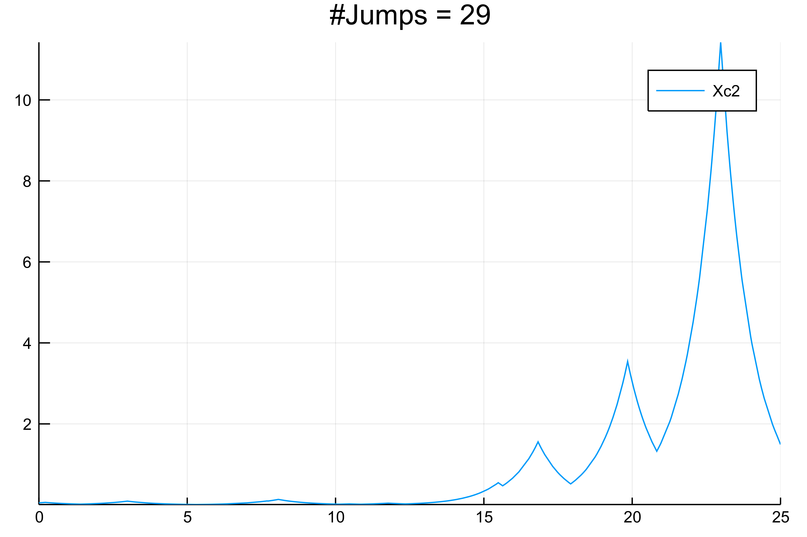

PDMP.jl
PDMP.jl is a Julia package that allows simulation of Piecewise Deterministic Markov Processes (PDMP); these encompass hybrid systems and jump processes, comprised of continuous and discrete components, as well as processes with time-varying rates. The aim of the package is to provide methods for the simulation of these processes that are "exact" up to the ODE integrator.
We provide several methods for the simulation:
- a recent trick, called CHV, explained in paper-2015 which allows to implement the True Jump Method without the need to use event detection schemes for the ODE integrator. These event detections can be quite unstable as explained in paper-2015 and CHV provide a solution to this problem.
- rejection methods for which the user is asked to provide a bound on the reaction rates. These last methods are the most "exact" but not the fastest if the reaction rate bound is not tight. In case the flow is known analytically, a method is also provided.
These methods require solving stiff ODEs (for CHV ) in an efficient manner. Sundials.jl and LSODA.jl are used, but other solvers could be easily added. (See stiff ode solvers).
We briefly recall facts about a simple class of PDMPs. They are described by a couple $(x_c,x_d)$ where $x_c$ is solution of the differential equation $\frac{dx_c}{dt} = F(x_c,x_d,t)$. The second component $x_d$ is a jump process with rates $R(x_c,x_d,t)$. At each jump of $x_d$, a jump can also be added to the continuous variable $x_c$.
Installation
To install this (unregistered) package, run the command
Pkg.clone("https://github.com/rveltz/PDMP.jl.git")
Basic example with CHV method
A strong requirement for the CHV method is that the total rate (i.e. sum(rate)) must be positive. This can be easily achieved by adding a dummy Poisson process with very low intensity (see next section).
See also the examples directory for more involved examples.
A simple example of a TCP process is given below. More precisely, we look at the following process of switching dynamics where $X(t) = (x_c(t), x_d(t)) \in\mathbb R\times\lbrace-1,1\rbrace.$ In between jumps, $x_c$ evolves according to $\dot x_c(t) = x_d(t)x_c(t).$
We first need to load the library.
using PDMP
We then define a function that encodes the dynamics in between jumps. We need to provide the vector field of the ODE with a function. Hence, we need to define a function that given continuous state $x_c$ and discrete state $x_d$ at time $t$ return the vector field. In addition some parameters can be passed with the variable parms.
function F_tcp!(xcdot, xc, xd, t, parms)
# vector field used for the continuous variable
xcdot[1] = xd[1]*xc[1]
end
Let's consider a stochastic process with following transitions:
-
, rate = 1 if $x_d>0$ *
, rate = 1 if $x_d<0$
| Transition | Rate | |–-|–-|–-| |$x_d\to x_d-2$ if $x_d>0$ | 1 | |$x_d\to x_d+2$ if $x_d<0$ | 1 |
This is encoded in the following function
function R_tcp!(rate, xc, xd, t, parms, sum_rate::Bool)
# transition rates function for each transition
# in this case, the transitions are xd->xd+2 or xd->xd-2
# sum_rate is a boolean which tells R_tcp if it needs to return the total reaction rates, this may
# i.e. the sum of the rates or the vector of the rates
if sum_rate == false
if xd[1] > 0
rate[1] = 0.
rate[2] = 1.
else
rate[1] = 1.
rate[2] = 0.
end
#we return 0. because nothing is supposed to be returned
return 0.
else
# we return sum(rate) without altering rate as we are asked to do
return 1.
end
end
# initial conditions for the continuous/discrete variables
xc0 = vec([0.05])
xd0 = vec([1])
# matrix of jumps for the discrete variables, analogous to chemical reactions
nu = reshape([[2];[-2]],2,1)
# parameters
parms = [0.]
tf = 25.
# compile the program:
dummy = PDMP.pdmp!(xc0,xd0,F_tcp!,R_tcp!,nu,parms,0.0,tf,n_jumps=1)
# compute a trajectory, in this case 100 jumps
srand(123)
result = @time PDMP.pdmp!(xc0,xd0,F_tcp!,R_tcp!,nu,parms,0.0,tf,n_jumps=100)
# plotting
using Plots
Plots.plot(result.time, result.xd[1,:],line=:step,title = string("#Jumps = ",length(result.time)),label="Xd")
Plots.plot(result.time, result.xc',title = string("#Jumps = ",length(result.time)),label="Xc")
This produces the following graph:

Adding more sampling points in between jumps
The current interface "only" returns the jumping times. On may want to resolve the trajectory in between jumps. For example, in the previous example, in between two jumps, the trajectory should be exponential and not linear as shown.
A simple trick to do this is to add a Poisson process to the reactions set with a given sampling rate. We have to modify nu, xcd0 and R_tcp! for this.
nu2 = [[2 0];[-2 0];[0 1]]
# the second component is the Poisson process
xd0 = vec([1, 0])
function R_tcp2!(rate, xc, xd, t, parms, sum_rate::Bool)
# transition rates function for each transition
# in this case, the transitions are xd->xd+2 or xd->xd-2
# sum_rate is a boolean which tells R_tcp if it needs to return the total reaction rates, this may
# i.e. the sum of the rates or the vector of the rates
rate_save = 10. #sampling rate in between true jumps
if sum_rate == false
if xd[1] > 0
rate[1] = 0.
rate[2] = 1.
rate[3] = rate_save #Poisson process used as sampling process
else
rate[1] = 1.
rate[2] = 0.
rate[3] = rate_save #Poisson process used as sampling process
end
#we return 0. because nothing is supposed to be returned
return 0.
else
# we see that we effectively return sum(rate) without altering rate because it is not asked to do so
return 1. + rate_save
end
end
srand(123)
result2 = @time PDMP.pdmp!(xc0,xd0,F_tcp!,R_tcp2!,nu2,parms,0.0,tf,n_jumps=10000)
Plots.plot(result2.time, result2.xc',title = string("#Jumps = ",length(result2.time)),label="Xc2")
This gives the following result:

Basic example with the rejection method
The previous method is useful when the total rate function varies a lot. In the case where the total rate is mostly constant in between jumps, the rejection method is more appropriate.
The rejection method assumes some a priori knowledge of the process one wants to simulate. In particular, the user must be able to provide a bound on the total rate. More precisely, the user must provide a constant bound in between jump. To use this method, one needs to return sum(rate), bound_rejection in the above function R_tcp!. Note that this means that in between jumps, one have:
sum(rate)(t) <= bound_rejection
nu2 = [[2 0];[-2 0];[0 1]]
# the second component is the Poisson process
xd0 = vec([1, 0])
function R_tcp2!(rate, xc, xd, t, parms, sum_rate::Bool)
# transition rates function for each transition
# in this case, the transitions are xd->xd+2 or xd->xd-2
# sum_rate is a boolean which tells R_tcp if it needs to return the total reaction rates, this may
# i.e. the sum of the rates or the vector of the rates
rate_save = 10. # sampling rate in between true jumps
bound_rejection = 1.+rate_save # bound on the total rate, here 0 + 1 + rate_save
if sum_rate == false
if xd[1] > 0
rate[1] = 0.
rate[2] = 1.
rate[3] = rate_save #Poisson process used as sampling process
else
rate[1] = 1.
rate[2] = 0.
rate[3] = rate_save #Poisson process used as sampling process
end
#we return 0. because nothing is supposed to be returned
return 0., bound_rejection
else
# we see that we effectively return sum(rate) without altering rate because it is not asked to do so
return 1. + rate_save, bound_rejection
end
end
We can now simulate this process as follows
srand(123)
result3 = @time PDMP.pdmp!(xc0,xd0,F_tcp!,R_tcp2!,nu2,parms,0.0,tf,n_jumps=10000,algo=:rejection)
Plots.plot(result3.time, result3.xc',title = string("#Jumps = ",length(result3.time)),label="rejection")
Application programming interface
Functions
#
PDMP.pdmp! — Function.
This function performs a pdmp simulation using the Change of Variable (CHV, see https://arxiv.org/abs/1504.06873) method or the rejection method. It takes the following arguments:
- xc0: a
VectorofFloat64, representing the initial states of the continuous variable. - xd0: a
VectorofInt64, representing the initial states of the discrete variable. - F!: an inplace
Functionor a callable type, which itself takes five arguments to represent the vector field; xdot aVectorofFloat64representing the vector field associated to the continuous variable, xcVectorrepresenting the current state of the continuous variable, xdVectorofInt64representing the current state of the discrete variable, t aFloat64representing the current time and parms, aVectorofFloat64representing the parameters of the system. - R: an inplace
Functionor a callable type, which itself takes six arguments to represent the rate functions associated to the jumps;rateVectorofFloat64holding the different reaction rates, xcVectorofFloat64representing the current state of the continuous variable, xdVectorofInt64representing the current state of the discrete variable, t aFloat64representing the current time, parms aVectorofFloat64representing the parameters of the system and sum_rate aBoolbeing a flag asking to return aFloat64if true and aVectorotherwise. - DX: a
Functionor a callable type, which itself takes five arguments to apply the jump to the continuous variable;xcVectorofFloat64representing the current state of the continuous variable, xdVectorofInt64representing the current state of the discrete variable, t aFloat64representing the current time, parms aVectorofFloat64representing the parameters of the system and ind_rec anInt64representing the index of the discrete jump. - nu: a
MatrixofInt64, representing the transitions of the system, organised by row. - parms : a
VectorofFloat64representing the parameters of the system. - tf: the final simulation time (
Float64) - verbose: a
Boolfor printing verbose. - ode: ode time stepper :cvode or :lsoda.
- n_jumps: an
Int64representing the maximum number of jumps to be computed. - ind_save_d: a range to hold the indices of the discrete variable to be saved
- ind_save_c: a range to hold the indices of the continuous variable to be saved
#
PDMP.chv! — Function.
chv!
This function performs a pdmp simulation using the Change of Variable (CHV) method see https://arxiv.org/abs/1504.06873. It takes the following arguments:
- n_max: an
Int64representing the maximum number of jumps to be computed. - xc0 : a
VectorofFloat64, representing the initial states of the continuous variable. - xd0 : a
VectorofInt64, representing the initial states of the discrete variable. - F! : an inplace
Functionor a callable type, which itself takes five arguments to represent the vector field; xdot aVectorofFloat64representing the vector field associated to the continuous variable, xcVectorrepresenting the current state of the continuous variable, xdVectorofInt64representing the current state of the discrete variable, t aFloat64representing the current time and parms, aVectorofFloat64representing the parameters of the system. - R : an inplace
Functionor a callable type, which itself takes six arguments to represent the rate functions associated to the jumps;rateVectorofFloat64holding the different reaction rates, xcVectorofFloat64representing the current state of the continuous variable, xdVectorofInt64representing the current state of the discrete variable, t aFloat64representing the current time, parms aVectorofFloat64representing the parameters of the system and sum_rate aBoolbeing a flag asking to return aFloat64if true and aVectorotherwise. - DX : a
Functionor a callable type, which itself takes five arguments to apply the jump to the continuous variable;xcVectorofFloat64representing the current state of the continuous variable, xdVectorofInt64representing the current state of the discrete variable, t aFloat64representing the current time, parms aVectorofFloat64representing the parameters of the system and ind_rec anInt64representing the index of the discrete jump. - nu : a
MatrixofInt64, representing the transitions of the system, organised by row. - parms : a
VectorofFloat64representing the parameters of the system. - tf : the final simulation time (
Float64) - verbose : a
Boolfor printing verbose. - ode: ode time stepper :cvode or :lsoda
#
PDMP.rejection_exact — Function.
rejection_exact
This function performs a simulation using the rejection method when the flow is known analytically. It takes the following arguments:
- n_max: an
Int64representing the maximum number of jumps to be computed. - xc0 : a
VectorofFloat64, representing the initial states of the continuous variable. - xd0 : a
VectorofInt64, representing the initial states of the discrete variable. - Phi! : a
Functionor a callable type, which itself takes 6 arguments to represent the vector field; rate aVectorofFloat64representing the flow of the vector which needs to be filled with values of the rates, xdot aVectorofFloat64representing the vector field associated to the continuous variable, xcVectorofFloat64representing the current state of the continuous variable, xdVectorofInt64representing the current state of the discrete variable, t aFloat64representing the current time and parms, aVectorofFloat64representing the parameters of the system, sum_of_rate aBoolstating if the function must return the total rate. - R! : a
Functionor a callable type, which itself takes five arguments to represent the rate functions associated to the jumps;xcVectorofFloat64representing the current state of the continuous variable, xdVectorofInt64representing the current state of the discrete variable, t aFloat64representing the current time, parms aVectorofFloat64representing the parameters of the system and sum_rate aBoolbeing a flag asking to return aFloat64if true and aVectorotherwise. The returned vector has components. If sum_rate isFalse, one must return rate_vector, bound_ where bound_ is a bound on the total rate vector. In the case sum_rate isTrue, one must return total_rate,bound_ where total_rate is aFloat64that is the sum of the rates. In any case, the function must return a couple (total_rates, bound) where bound is a bound for the total rate. - Delta : a
Functionor a callable type, which itself takes five arguments to apply the jump to the continuous variable;xcVectorofFloat64representing the current state of the continuous variable, xdVectorofInt64representing the current state of the discrete variable, t aFloat64representing the current time, parms aVectorofFloat64representing the parameters of the system and ind_rec anInt64representing the index of the discrete jump. - nu : a
MatrixofInt64, representing the transitions of the system, organised by row. - parms : a
VectorofFloat64representing the parameters of the system. - tf : the final simulation time (
Float64) - verbose : a
Boolfor printing verbose.